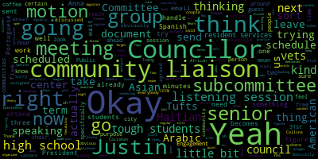
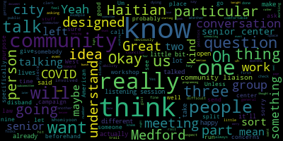
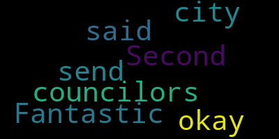
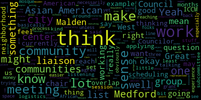

[Leming]: This is a subcommittee meeting of the Resident Services and Public Engagement Committee dedicated to scheduling and hashing out listening sessions. So I guess the purpose of this is just to spend a little bit of time trying to figure out what groups we are specifically going to reach out to, when, what the best times would be. So if any of my fellow subcommittee members have any ideas, feel free to take it away.
[Callahan]: I just wanted to check in on something, which is, I do have a, I have a workshop, an old workshop that I used to give on how to do these kinds of listening sessions. So I haven't sent it because I'm like. Is your mic on? It is on, but I'm not talking to it. I've just been thinking about, uh, not getting in trouble with, uh, bidding law. And I, I guess what I should do is send a copy to you and the clerk, and then it'll get distributed at the next meeting. Is that the appropriate thing to do? It's just like how to run one of these sessions.
[Leming]: So sure. I mean, yeah.
[Hurtubise]: I can send it to whoever you direct, and then you're not sending it to a quorum of any committee. Just send it to me, ask me to send it to whoever you need me to send it to, and I will take care of sending it.
[Callahan]: and that works for open meeting law?
[Hurtubise]: Correct. The clerk cannot violate the open meeting law, only the body can violate the open meeting law. So if you were to send it to a quorum of this subcommittee, that could potentially be an open meeting law violation. If you were to send it to me and say, could you send it to the rest of this subcommittee, that would not be a violation.
[Caraviello]: And if I said, can you send it to all the city councilors?
[Hurtubise]: Yes, correct.
[Caraviello]: Is also okay?
[Hurtubise]: That's also okay. If you send it to me directing me to send it to whoever, that's not a violation.
[Callahan]: Great, okay, good.
[Hurtubise]: That's part of the reason why the clerk is in place, because the body can violate the opening law, but the clerk can't. I mean, the clerk can violate it on behalf of the body, but that's not one of the ways that it happens. That's not one of the ways it can happen.
[Callahan]: Great, and then I will look it over before I send it, because I know it's not exactly designed for what we're doing, but it's kind of like a, general like how-to designed for local electoral politics generally.
[Leming]: So is there kind of a gist that you might have for that?
[Callahan]: Yes and and part of that is gonna and I think part of what is recommended in because it's really designed for like one City Councilor or one like Mayor or somebody to run them. And so I think one of the things we probably will not adhere to very closely is that really the meetings are designed to be not public, not open to anyone. They're designed to be like safe spaces for a specific community. And I think we will not be doing that. We will have ours be more public, which is fine. But the idea that if you really want to understand, for example, the Haitian community, you go to a Haitian church, you don't have it be like any random person from Medford could show up. You have it be like a community. of people that knows each other and you know in a place where they usually congregate. So what we're doing is going to be a little bit different but I think it'll also be, it'll still have a little bit of that kind of flavor of a you know, a space where people feel comfortable because we're going to go through the community liaisons, we'll have it like at the senior center because we're going to these places. I think, you know, it will lend itself a little bit more towards people opening up, which is the idea. It's like for people to feel comfortable that they can open up about what their lives are like.
[Leming]: Okay. So I think feel free to send that to all of the council when you have that figured out. And also, this is only three of us, so we don't need to have the chair recognize some of this.
[Callahan]: And if I apologize, I was just realizing I didn't really answer your question. Your question was more about the gist. And I said what we weren't going to do. But the gist is the purpose is not for us to be like, here are policies that we want to know about. The purpose is really for us to ask more general questions about what their lives are like. But ideally, we've talked to someone in that community beforehand. We've had a conversation, like whoever's going to facilitate a conversation talks to somebody beforehand who can say like, hey, this community is probably going to want to talk about X, Y, or Z. So we have some idea. We're not just sort of randomly asking questions about their lives, but we know a little bit about them. And let me just give one example. before COVID, I was running a campaign for, you know, the first couple of months before COVID hit. And then COVID hit and I couldn't do these listening sessions, but I did get a chance to speak to someone from a particular community who, and you know, it was, I was wishing that I could have a listening session, but I didn't end up having one because of COVID. But the person that I talked to really helped me to understand that Most of the people in that community were health care workers. Many of them were working with the elderly. And so the impact on that community of COVID specifically was really devastating because the number of their patients who were dying, the number of you know, the other people that they knew who were also, you know, nurses and caretakers who were dying of COVID. I mean, it was really an eye-opener for me. And to think about like how to ask those questions and really understand like what could be done from a policy perspective. And obviously that's like a, that was a critical time and a really unusual thing, but I wouldn't have known about that particular aspect if I hadn't talked to someone who knew that community really well first. So knowing sort of what to ask is always good. And I think with the community liaisons especially, we'll be able to talk to the liaisons themselves and maybe get some of that from those folks. It'll be easy because they work for the city and we have access to those people. So that'll be a nice conversation.
[Leming]: So, okay, so go ahead and send around that. That sheet, but so, I guess, in terms of. How that work, how that works out sort of in practice, I'm just kind of thinking of the upcoming 1 on the. 31st that Councilor was are on our schedule to go to. I think that that's sort of just in the context of like a. senior center's regular coffee hour. What I'm thinking about right now is just in terms of organizing the listening sessions and what they'll actually look like when we're going to them. For certain groups, if it's like a super organized listening session, like people were brought together for that specific purpose, I imagine that could work out. But if it's two city councilors who are showing up to a regularly scheduled coffee hour, go into like a chitchat sort of a thing as well, which, yeah, go ahead.
[Callahan]: So I actually would, I think that the senior center is a really good opportunity. As I was talking to seniors on the campaign trail, I'm sure you also have like stories on the campaign trail, you know, we all do. You know, they had very particular concerns that are things we can address, concerns about transportation specifically, like how to get from one part of the city to another. Folks in West Medford talked about the, you know, commuter rail, not being ADA compliant, like at that one particular place and how difficult that made their ability to use that. Obviously, we don't have control of the commuter rail, but as city councilors, it is something that we can, you know, push the state legislators for. You know, I wouldn't go in and talk about whether they have job opportunities. You know what I mean? Like, there are things you do and don't talk about. And I think, you know, it can definitely be tailored toward seniors and talking specifically and asking them questions to sort of bring out like, how is Medford serving you? We're at the senior center, so we don't want to get them complaining about the senior center itself. So we want to be delicate about that particular aspect. But I think there are a lot of things that Medford can do. And even maybe some conversations, I know like Arlington, because I met my mom, they have a really great like senior, you know, I forget what they call it, but it's like the senior center, it's like a community center for elderly, Council on Aging or something like that. And they have tons of programming. I've heard seniors talk about lack of programming. They want to talk about the sidewalks, you know? I mean, so I think there are like very directed questions that we can have to understand how Medford can serve seniors better. And it's a really, I think it's a great one to try out this, targeted, facilitated conversation rather than just a chitchat. That's what I would do if I were there.
[Leming]: Yeah, so what I'm, okay, I'm just, I'm just sort of thinking about the logistics that we'll be going through when we actually schedule these things. So there's, so we definitely need a, you know, a point person in the communities, which obviously we have five community liaisons. agreed to discuss seniors, vets, and then high school and tough students as well. I'm thinking that probably the flow of these things is going to be, we scheduled the next one, which May 31st in this case. The Councilors that go there take notes, they report back at the next resident services and public engagement committee meeting. what they discussed, just try to offer as succinctly as possible, maybe 10 minutes during a session, what was talked about, what people were telling them, and then schedule the next one. and then just kind of keep doing that for about, you know, the rest of the term, so.
[Tseng]: Sure, let me, if I may. I mean, I agree with everything that's been said. I just, I had a quick question for Councilor Callahan before we, like, moved into the more specific stuff about scheduling. So, for the file that you are thinking about sending around, does that have kind of guidelines of how we should run these meetings, like, best practices for developing questions and structuring the meeting?
[Callahan]: Um, it does. And again, it is designed for like one elected official to be doing these rather than like a group that so therefore no open meeting law, you know, we don't, it doesn't consider any of those things. Um, let me just take a peek.
[Leming]: Can you just, is it okay to just pass it around, like email to everybody in this meeting and just include it in the minutes as a, uh, if I send it to you right now, can you send it to us to look at right now?
[Callahan]: Oh, wonderful, thank you so much. Great, that makes me happy.
[Leming]: Or just share it on your screen, or yeah, just share it with me. I could put it on the screen in Zoom or something. That's helpful.
[Hurtubise]: So I guess this is... How do I share it on the... Email it to me, or if you want to join the Zoom, but...
[Leming]: Whichever.
[Callahan]: Hang on.
[Tseng]: While we're working on that, I think something to think about is who's going to be the one thinking about the questions that we want to center these conversations around. I mean, obviously we'll work with liaisons to do it, but I think it might make sense for each of these meetings if one of us were the lead for each meeting, and then to have that person work with, for example, a community liaison or the director of council of aging or something and work on work on those questions at least to center the discussion a little bit.
[Callahan]: I love that idea that one person is the point person and they're the facilitator and they meet with the person beforehand to figure out what the question to be.
[Tseng]: Great. I think that makes a lot of sense. Yeah, I think that's that's basically the the stuff I had The logistics I thought we should work out first before we talked about all the other groups that we want to work with. Do we know who is going to be present at the senior center listening session?
[Leming]: Should be myself and Councilor Lazzaro. So at the last resident services meeting, it was agreed that Basically, the chair would just check in with everybody and figure out who's available for what it becomes. And then we 2 Councilors would be sent to each of these sessions. It becomes a little bit of a. Problem and set theory to not violate open meeting law with 2 Councilors because. Basically, only 1 person from this subcommittee can actually attend those while the subcommittee still exists. Then. Councilor Lazzaro or Councilor can just attend. I think they have a little bit more flexibility not being on the subcommittee. And then. then Council President Bears and then Council Vice President Collins are also even have even more freedom to go to any of the listening sessions, just not being on the resident services meeting. It becomes a little bit more constrained with us three being on this subcommittee because no two of us can attend. Yes, Councilor Callahan.
[Callahan]: I really believe that we would actually, after this meeting, where I think we should Like I like your suggestion about one person kind of owning. I think we should also maybe divvy up the work tonight for how to reach the different, it's only nine groups. We just split it up between the three of us. And after that, I would actually really like to disband this subcommittee because I think it makes it very difficult. No two of us can ever talk about it. And I think that we will have, more ability to get things done if I can call one of you and say, hey, did you call this person or not? Like, it just makes more sense to me if we disband this after tonight.
[Tseng]: Yeah, I think that makes sense. I just wanted to have at least one meeting of the subcommittee together so we can work out these logistics. I think we were being very cautious also with a lot of the subcommittee work, but I think the work that a lot of what we are currently talking about if Mr. Clerk you can correct me on this is scheduling related and so it's not necessarily it's not subject to open meeting law.
[Hurtubise]: I believe yeah I believe that scheduling is an exemption from the open meeting law so you can you can discuss scheduling. because you would necessarily, you may necessarily need to speak with a quorum of the committee to hash out schedules. So I believe that is why scheduling is exempt. Yes.
[Tseng]: Great. Yeah, I think tonight is helpful to orient ourselves since we haven't had a meeting explicitly on it yet. And I think it's easier to work on this in a smaller group. But I would be willing to support the the motion to stand after if we feel that we're in a good space.
[Leming]: All right. So Councilor Callahan, once you email the document when you're ready, but in the meantime, is there any other business other than figuring out who specifically is going to reach out to which groups?
[Tseng]: I was wondering if you had the list of nine.
[Leming]: It's seniors, seniors, vets, high school and tough students, and then the five reps, the five community liaisons. So which is Portuguese, Haitian, Arabic, Spanish, and I forget what the fifth group.
[SPEAKER_02]: Yeah, sorry. African American.
[Callahan]: I just sent it to Adam, sorry, the clerk. So hopefully we can take a little peek at it before we leave today.
[Leming]: I didn't, okay, so you just sent it, so I'll wait a little bit for the email once it does come through.
[Tseng]: I think there'll be overlap with, so this is going back to the groups that we should reach out to if this is okay. I think there will be overlap with the working with the communities on African American communities, but I do think reaching out to the West Medford Community Center would make sense as well. Seeing as it's, I mean, it is more of a neighborhood thing, but obviously they're very tied in with the historically black community in West Medford. Maybe that's a meeting we work with to folks on using the space of the West Medicare Community Center, but working with the community to do it. I also think there's potential, I would say we should do this further down the line when we have more experience with these meetings, but reaching out to Asian American communities can be really good. I know the city is talking about, the city is trying to, oh great, the city The city is currently applying for grant money to get an Asian American liaison. But, you know, applying for grants is different from having the money. And, you know, I think we should give it a few months, see where we're at with that application process. If it doesn't work, I know community activists in neighboring communities, like Malden, for example, that have been working with Chinese American communities in both Malden and Medford. And they have experience doing this, the listening session model in Malden, and so perhaps they would have contacts of how to do that here in Medford, especially since a lot of the Asian American community is concentrated in East Medford near Malden, so it might make sense to work with them. I think another way to reach the Asian-American community is through the ICCM, the mosque in the city. We have a really large Pakistani and Bangladeshi population and a lot of them frequent the mosque. So putting them on the list to work with, I think, would also make a lot of sense.
[Callahan]: Matt, are you getting these extras? Putting them on the list? Sorry, I was- Should we have a spreadsheet or something? We write these down somewhere. and the date that we have them on. I don't know, this might be useful.
[Leming]: Yeah, I apologize. I was recording some of that, but I started looking through the document that you sent, which I just received just now. So I would appreciate if Councilor Tseng would forgive my lapse in attention.
[Tseng]: It's all right, I can send you the list of additions after the meeting as well. I think it might make sense for the chair to have a spreadsheet, but if we're disbanding this and we're going back to the Res Services Committee, then three of us can't share on it, unless it's for scheduling. But I think it just becomes a little more complicated. I think the chair holds the document and the chair organizes, basically. If that's okay with you.
[Callahan]: Okay, so, so far I have- And we can, from this subcommittee, if you want, we can meet with the president. I mean, we already have nine groups, so we can, any additions, we can always be like, people committee, we would like to add these.
[Tseng]: Right.
[Callahan]: Vote.
[Tseng]: And then- Yes, yeah.
[Callahan]: And then on it goes, so.
[Tseng]: Right. I just want to put these on the list now, but I totally agree.
[Leming]: Sorry, so I have 10 groups total because Justin, Councilor Tseng just added Asian American communities to the list. Yeah, ICCM. Asian.
[Tseng]: ICCM and then this may overlap with the communities on for African American communities, but the West Central Community Center got that. That might just end up, you know, we might talk to the community liaison and she might suggest that we just fold it into one. I think that would make a lot of sense.
[Callahan]: And then... Unless she thinks two in different parts of the city. Right.
[Tseng]: Which would also make sense. So we should defer to, you know, or work with her on that. And then I think next year, at some point, once we really have things down pat, we can think about neighborhoods that aren't necessarily represented on the City Council or haven't had the Habitat City Council representation in a while. I know with this new make of City Council, a lot of the neighborhoods that have traditionally been left out are now represented. But as I think, A few of our Councilors may have experienced, especially when you're in a place like Wellington, a lot of folks there do feel left out. They haven't had a Councilor representing them for three and a bit years. trying to find something to set up there would make a lot of sense, but I do think it would be logistically more complicated and more involved. And so that's why I suggested something that we hold off until we feel much more comfortable.
[Leming]: I actually do have a graphic that shows where historically city council has been represented in the past. Yeah. All right. So do you think it would be productive to try to figure out what the next couple of listening sessions we're going to try to schedule over the next couple of months after the senior center and who's going to take charge of them would be?
[Callahan]: I would take the nine that we already decided and split them up between the three of us. The eight left aside from the three of us. Just split them up between the three of us. And then just for scheduling purposes, as soon as we talk to somebody, we'll pay you. I don't think they'll overlap naturally. I think a lot of them will be like, oh, let's do something two, three months from now. And as we're scheduling, we'll have a moment to check in and make sure that they're not too late.
[Tseng]: I think that makes sense. I think we reach out to, for example, a community, as I would say, between the months of July and October, which months, is there a good time for us to do a meeting like this? And then I think, naturally, they'll respond, and we can continue as the chair.
[Leming]: Yeah, so in terms of assigning who's going to handle which, I think there are a few obvious ones that I can think of. So I would handle vets. I think Justin would handle high school. Tufts would be handled by our esteemed counsel, Vice President Collins.
[Callahan]: Oh, I thought the three of us are doing all this. Just the three of us.
[Leming]: I mean, yeah, okay. I was just thinking about Tufts because she's an alum and I can't think of anybody else. You would do Tufts? I could do Tufts, yeah.
[Callahan]: I'm happy to do anything. I love the community liaison.
[Leming]: Yeah, just a few of the... I was just trying to think of the more obvious.
[Callahan]: The two high school sites and Tufts, that's already three.
[Tseng]: the two high school sites.
[SPEAKER_02]: Oh, yeah, because we had... I thought it would be pretty interesting to do those separately.
[Tseng]: It could be interesting. I mean, we can work on it. Yeah, I think with the high school TEFs, thinking about the community liaisons, there's so many of them, so we can split them up. I do know a few of them very well, so I can work with them as well. I could do Portuguese. Okay. I know the Arabic speaking and the Haitian speaking ones very well.
[Callahan]: Okay. And will you send this out in the meeting minutes?
[Leming]: Yeah, I'm just, I'm just writing them down for my own. Okay. I'm just like trying to. Okay. So Justin, oh wait, so sorry, Justin, you said the Asian speaking community liaison addition to high school students and tough students. Okay.
[Tseng]: Okay.
[Leming]: Arabic. Wait, but you said, is there an Asian American liaison?
[Tseng]: Oh, so what I was saying, sorry, you might have missed this because you were working on the thing. The city is currently in the process of applying. No, I heard that. So we don't have an Asian liaison yet.
[Leming]: But that adds to number 10. So would you?
[Tseng]: So I was saying that after we get used to running these meetings, hopefully we'll have one in place in Medford by then. But if we don't, then I can work with local nonprofits that do have roots, ties to Asian American groups in Medford and Malden to try to set something up. But I think that's something down the line.
[Callahan]: I will do both. I'll do the Spanish-speaking community liaison. I'll do the Black African-American community liaison and also the West Medford Community Center and I'll work with both of them to see whether we want one or two.
[Leming]: Okay, so that leaves the Haitian community liaison, I believe.
[Callahan]: Oh, I'm happy to do that. Great.
[Tseng]: Sorry, which one was that?
[Callahan]: Haitian.
[Tseng]: Oh, okay. Unless you said... I did say it, but you can work on that as well.
[Callahan]: I mean... Yeah, I think he thought you said Asian-American, but you probably said Haitian-American. Oh, okay, okay, that was... Yeah, that's the confusion. Okay, so, sorry. So Haitian is you, unless you want to give it to me, either way is fine.
[Tseng]: We can see how to copy who we end up with, if it's really you, but then... Yeah.
[SPEAKER_02]: Then we... Yeah.
[Leming]: Okay. Yeah. Okay, so I'll leave Anna with Haitian because Justin already has three. So right now the divisions I have between the nine original groups that were assigned were, Emily has already scheduled something with the seniors. Justin has high school students, tough students, and the Arabic community liaisons. I have vets, veterans, and the Portuguese community liaison. And Anna has Spanish speaking, African American, Haitian and the West Medford Community Center community liaisons.
[Tseng]: I think that sounds good. I think the one group that I would add into this list from the kind of like from the list I mentioned was just ICCM because I think that's a more concrete group that would be easier to set up with versus the some of the ideas with like Asian Americans or whatever.
[Callahan]: I would also mention that like I have where I've had a long ongoing conversation with Kuliyan from the Bangladeshi community. He is supposed to be working on setting up one of these for me, a listening session literally just like this. And so, you know, if we want to, I think we loop him in. Yes. Because he is interested and already was planning on it.
[Tseng]: Awesome. That makes a lot of sense. Would you want to take point on that?
[Callahan]: Sure.
[Tseng]: Awesome.
[Callahan]: Thank you. If I am, then maybe you take Haitian. Okay. Yeah.
[Leming]: Well, that leaves Justin with four, me with two. Let's see if we're trying to divide it equally among the groups.
[Callahan]: Yeah. Unless you want to do the Haitian. I know Whomiyoon and also Foxy and Nicole pretty well, so, and I've been talking to Whomiyoon about it, so I'll work with Whomiyoon in ICM. And also I've been doing the West Country Community Center a bunch, so I'm happy to be doing that one as well as the Aftermarket Community Day event.
[Leming]: That makes sense. Okay. Okay. So the final listing, Anna has Spanish speaking, African-American, uh, the West Medford community center, ICCM. I have the vets, Portuguese community liaison and Haitian community liaison, Justin high school students, tough students, Arabic speaking community liaisons. And obviously council is already scheduled something with the seniors. So yeah.
[Caraviello]: Fantastic.
[Leming]: Awesome. Cool. All right. That appears to be that. So is there any other order of business in the seven minutes between now and the start of the Committee of the Whole meeting?
[Callahan]: Can I super quick talk to you guys through this doc?
[Leming]: Yes, sure. Okay, Continuous Town Halls.
[Callahan]: So I actually had to cut out a bunch of other stuff out of this particular document. So this is like a portion of it. So if there's anything that's like, oh, see the XYZ earlier in this document, it's not there, don't worry. I left in just this little introduction about the model that you will find humorous. Because it's like, oh, you know, We're on a slate of candidates on a single platform. They're like, oh yeah, I recognize that. And then I also left in what is called the pitch, just because, I don't know why I left it in there, but I know it happens later, I mention it later, so I think that's why I left it in there. Anyway, starting on page four is where we start talking about the continuous time hauls, and you can see that before doing it, you choose the constituency, you contact the group leader, you set a time and location, And then you work with that group's leadership to come up with questions, right, that relate to the concerns of the group. And then at the event.
[Leming]: This does seem to be kind of getting into more like campaign strategy in certain parts of the document.
[Callahan]: That's why it's not really like, we fit it into like a raising small dollar donations workshop. It was one of the pieces, including like house parties were another piece, there were different other pieces. So just don't worry about that stuff. Like I said, I would have pulled all that stuff out, but in this particular case, it's more just for the part that's like starting at page four.
[Leming]: Yeah. Would it be possible to have what, to get like an edited version of the document where you kind of just take in the listening session stuff and then leave out the.
[Callahan]: Yeah. Yep. I agree. I will do that. Um, but like a short intro, so people kind of understand what's going on. And then it should really be 70% listening. And I do think that, like, you know, this sort of 30% helping to educate people, because a lot, like, the idea is that a lot of these people, maybe if they don't vote in city politics, have no idea what, how it even might affect their lives. And so helping them to sort of understand how they can become more involved in the community, how can they become more involved you know, politically and people that they know can run for office or get involved like that, I think is a helpful part of it if it comes up, but we don't have to do that.
[Tseng]: I mean, I assume naturally quite a lot of, you know, what we'll hear will be simple requests that we can teach them how to use CClick fixed form or something like that. That makes sense. Yeah, if we could get an edited version of this for the for the council members, I think that's great. Great. Thank you for your for your research. All right.
[Leming]: Thank you. All right. So do we need to turn any thing that was discussed so far in this committee into an official motion? Or are we?
[Callahan]: I don't think so. Oh, to disband this committee, I think is not a bad idea.
[Hurtubise]: I think that should be in the subcommittee since the subcommittee, I mean, I should be in the full committee since the full committee created the subcommittee. Yeah.
[Leming]: Okay. Cool. Okay. So, so otherwise, yeah, I have, I wrote down who's assigned to what and yeah, do we have any motions on the floor? Motion. Oh, okay.
[Caraviello]: Second.
[Leming]: Okay, motion to adjourn. On the motion to adjourn. All those in favor? Aye. All those opposed? Nay. Motion passes. Thank you.
|
total time: 9.37 minutes total words: 1382  |
total time: 12.74 minutes total words: 2332  |
total time: 0.08 minutes total words: 18  |
total time: 8.22 minutes total words: 1449  |
{kind=link}
{kind=link}
{kind=link}
{kind=link}